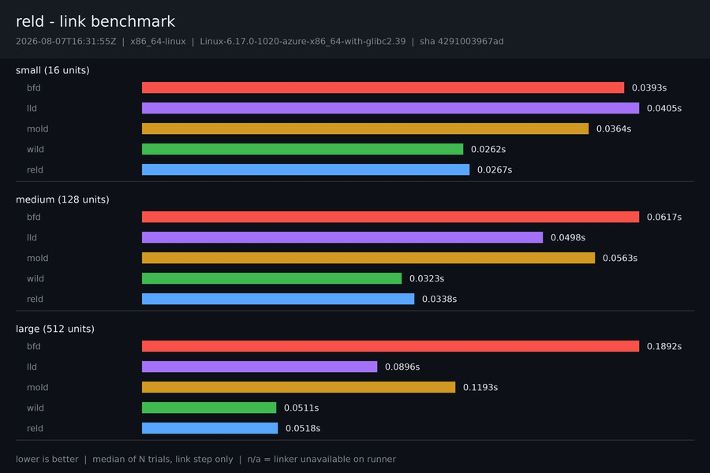

2026-08-07T16:31:55Z · x86_64-linux · Linux-6.17.0-1020-azure-x86_64-with-glibc2.39

| Scenario | bfd | lld | mold | wild | reld |
|---|---|---|---|---|---|
| small (16 units) | 0.0393s | 0.0405s | 0.0364s | 0.0262s | 0.0267s |
| medium (128 units) | 0.0617s | 0.0498s | 0.0563s | 0.0323s | 0.0338s |
| large (512 units) | 0.1892s | 0.0896s | 0.1193s | 0.0511s | 0.0518s |